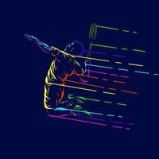

My Hobbies
What is a Hobby ?
A hobby is an activity or interest that someone engages in for pleasure and relaxation during their leisure time. Hobbies are typically pursued for personal enjoyment rather than for monetary or professional gain. They can encompass a wide range of activities and interests, and people often choose hobbies based on their individual preferences, talents, and passions.
What are my hobbies ?
Here's a list of your hobbies, along with a brief elaboration of each one:
- Badminton: Badminton is not just a sport for me; it's a passion. I love the fast-paced nature of the game,
the precision required for shots, and the thrill of competing on the court. It's a
great way for me to stay active and healthy while having a lot of fun.

- Table Tennis: Table tennis is another sport that I thoroughly enjoy. The rapid exchanges of
shots and the need for quick reflexes keep me engaged and provide an excellent workout.
I often play with friends and family, making it a social and enjoyable activity.
- Watching Movies: Watching movies is one of my favorite ways to unwind.
Whether it's a gripping thriller, a heartwarming drama, or a mind-bending science
fiction film, I find joy in the art of storytelling through cinema. It's a way for me to escape into
different worlds and explore a wide range of emotions.

- Reading Books: Reading is a lifelong hobby that I cherish. I'm an eclectic reader, delving into various
genres, from classic literature to contemporary fiction, non-fiction, and self-improvement books. Reading not only entertains me
but also expands my knowledge and broadens my perspective on life.

Each of these hobbies provides me with a unique source of enjoyment and relaxation, contributing to a well-rounded and fulfilling life. Whether it's the physical activity of sports, the mental engagement of movies and books, or the social aspect of playing with others, my hobbies are an essential part of who I am.